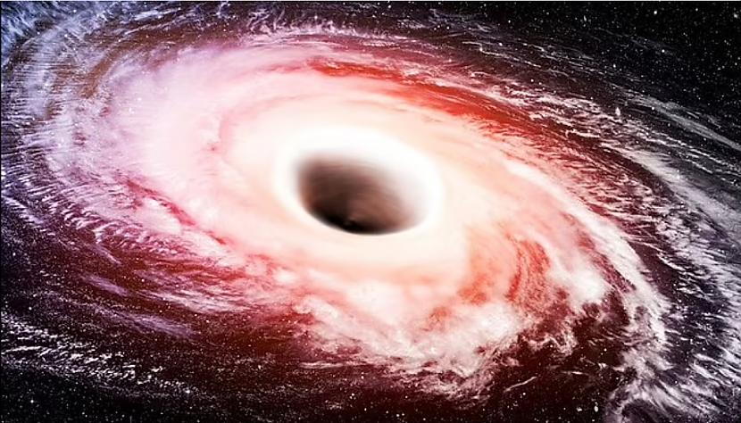

Milzīgais melnais caurums, kas slēpjas mums kaimiņos
Zinātnieki atklāj milzīgu tukšumu Piena ceļā, kas ir 33 reizes masīvāks par Sauli. Melnajiem caurumiem, kas spēj apēst veselas planētas, ir jābūt šausmīgākajiem objektiem Visumā.
👉 Turpināt lasīt